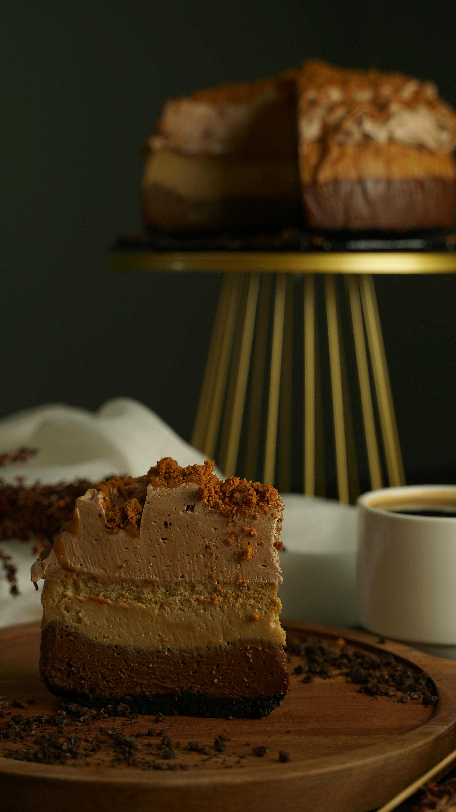

Carro Chef do Belisco

Bolo de Cafë

Torta Salgada
Aqui cada xícara é uma experiência única!
Você encontra não só deliciosas bebidas e comidas, mas
também um espaço para relaxar, trabalhar e se conectar.
Venha conferir!
A belisco conta com uma tecnologia em seus "copos" quentes que permite que o mesmo mantenha a temperatura constante.
Criamos um espaço acolhedor para freelancers e estudantes com Wi-Fi gratuito, tomadas em todas as mesas e salas de reunião reserváveis.
Nossa belisco é uma plataforma de apoio para todos os nossos clientes, que buscam ser mais felizes, mais saudáveis e mais produtivos também na companhia de seu bichinho!.
Ingredientes:
2 colheres de sopa de manteiga derretida
2 colheres de sopa de açúcar
1 colher de sopa de açúcar mascavo
1/4 colher de chá de baunilha
1 pitada de sal
1 gema de ovo
2 colheres de sopa de farinha de trigo
1 colher de sopa de chocolate em pó
Modo de Preparo:
Em uma caneca, misture a manteiga derretida, o açúcar, o açúcar mascavo, a baunilha e o sal.
Adicione a gema de ovo e misture bem.
Adicione a farinha e o chocolate em pó, mexendo até ficar homogêneo.
Leve ao micro-ondas por aproximadamente 1 minuto (pode variar conforme a potência do micro-ondas).
Deixe esfriar um pouco e aproveite!
Ingredientes:
1 xícara de leite morno
1/2 xícara de óleo
2 ovos
2 colheres de sopa de açúcar
1 colher de chá de sal
1 pacote de fermento biológico seco (10g)
4 xícaras de farinha de trigo
Modo de Preparo:
No liquidificador, bata o leite morno, o óleo, os ovos, o açúcar, o sal e o fermento até ficar
homogêneo.
Despeje a mistura em uma tigela grande e adicione a farinha de trigo aos poucos, mexendo até formar uma
massa lisa e homogênea.
Cubra a tigela com um pano e deixe a massa descansar por aproximadamente 30 minutos ou até dobrar de
volume.
Despeje a massa em uma forma untada e enfarinhada.
Asse em forno preaquecido a 180°C por cerca de 30 minutos ou até dourar.
Rápido, fácil e delicioso! Bom apetite!